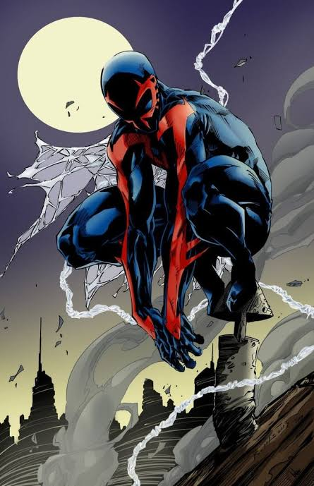

Spider-Man 2099 (Tierra-928)

Nombre Real
Miguel O'Hara
Primera Aparición
Apareció por primera vez en The Amazing Spider-Man #365 (agosto de 1992), creado por Peter David y Rick Leonardi.
Lore / Historia
Un brillante genetista que trabaja para la despiadada megacorporación Alchemax en la Nueva York del año 2099. Tras sufrir un saboteo y ser adicto a una droga corporativa, intenta purgar su ADN en un experimento, pero su código genético se fusiona al 50% con el de una araña.
Logro Importante
Posee garras retráctiles, colmillos venenosos y visión acelerada. Utiliza tecnología futurista de viajes en el tiempo y dimensiones para liderar y organizar la red de protección multiversal de las distintas arañas.